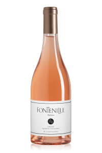
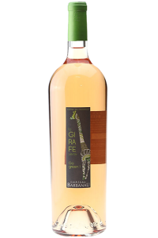
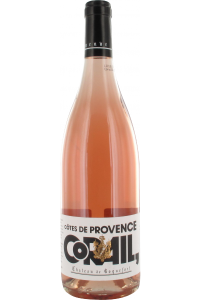
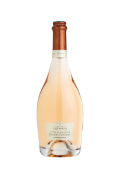
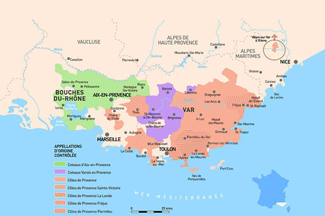

nom: Fontenelle
année: 2020
cuvée:
Push Here
PROVENCE


nom: Girafe
année: 2012
cuvée:

Corail
année
cuvée

Chapelle rose
année
cuvée
L’appellation Côtes de Provence s’étend sur 3 départements
le Var,
les Bouches-du-Rhône,
une commune dans les Alpes-Maritimes
Depuis 2005, l’AOP Côtes de Provence met en évidence la diversité de ses terroirs en valorisant
cinq Dénominations Géographiques Complémentaires.
Côtes de Provence Sainte Victoire
Côtes de Provence Fréjus
Côtes de Provence La Londe
Côtes de Provence Pierrefeu
Côtes de Provence Notre Dame des Anges.
